KARTÓDROMO INTERNACIONAL DE BETIM · CRONOMETRAGEM
Cadastro de kart
no programa da cronometragem
Passo a passo com as telas reais do programa Kartódromo Cronometragem (versão 1.0.114): ligar o transponder ao número do kart, informar o chassi, trocar placa e sensor de chassi e conferir na pista.
1 a 99Número do kart da frota Light (lastro 90 kg)
100 em dianteNúmero do kart da frota Super (lastro 100 kg)
Chassi livreQualquer número ou texto. O chassi não define Light ou Super.
A. Cadastrar um kart do zero
B. Conferir na pista
C. Trocar placa e sensor de chassi
D. Trocar o número ou desligar um transponder
E. Transponder que passou sem cadastro
F. Depois do cadastro (app do galpão)
G. Problemas comuns
Todas as telas deste manual foram tiradas do programa instalado no computador da cronometragem em 17/11/2026, durante um teste real de cadastro (karts de teste 97 e 98, apagados ao final).
A. Cadastrar um kart do zero
Antes de começar, tenha em mãos: o número do transponder (etiqueta no próprio transponder), o número do kart (placa) e o número do chassi (gravado ou plaqueta no chassi).
1Abrir o programa da cronometragem
Na área de trabalho do computador da cronometragem, dê dois cliques no ícone Kartódromo Cronometragem. Se o programa já estiver aberto (como na hora das baterias), use ele mesmo: o cadastro pode ser feito com corrida em andamento.
2Clicar no menu Cadastros
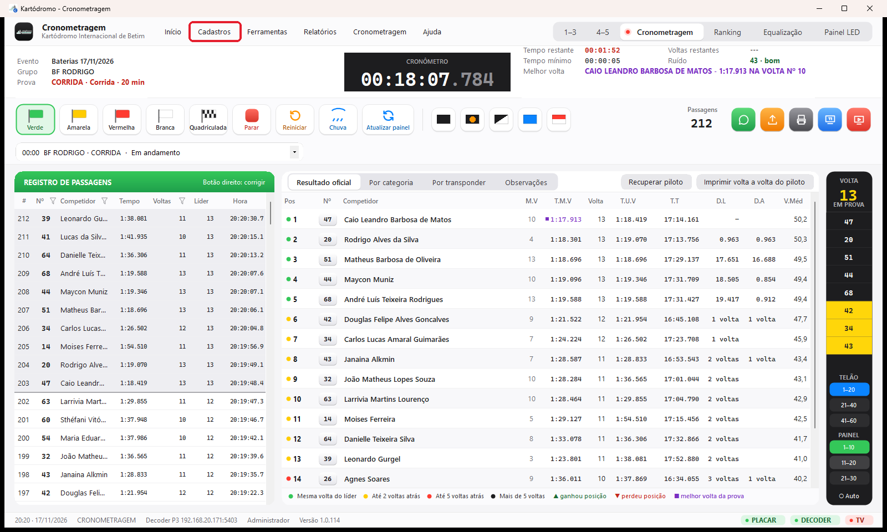
Onde clicarMenu Cadastros, na barra de cima, ao lado de “Início”.
O que abreA lista de cadastros do programa.
3Clicar em Kart: transponder e chassi (De/Para)
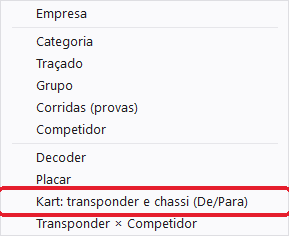
Onde clicarItem Kart: transponder e chassi (De/Para), quase no fim da lista.
O que abreA janela Registro de kart (transponder e chassi).
AtençãoNão confundir com “Transponder × Competidor”, que fica logo abaixo e serve para outra coisa.
4Na janela que abriu, clicar em + Novo
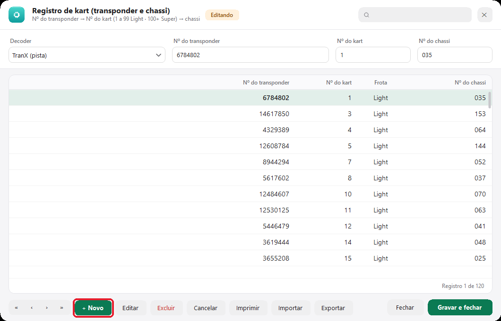
O que apareceA lista de todos os karts: transponder, número do kart, frota (Light ou Super) e chassi.
Onde clicarBotão verde + Novo, no canto de baixo à esquerda.
5Os campos de cima ficam em branco para digitar
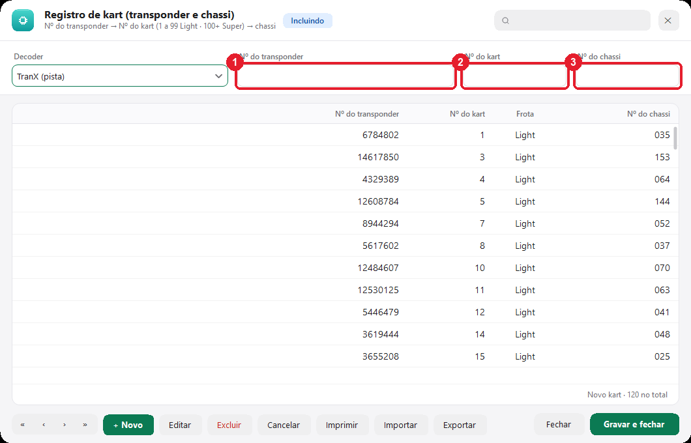
1 · Nº do transponderNúmero da etiqueta do transponder. Só números.
2 · Nº do kartNúmero da placa do kart. Só números, de 1 a 999.
3 · Nº do chassiNúmero do chassi, do jeito que está gravado nele.
DecoderDeixe como está: TranX (pista).
6Digitar os três números e clicar em Gravar e fechar
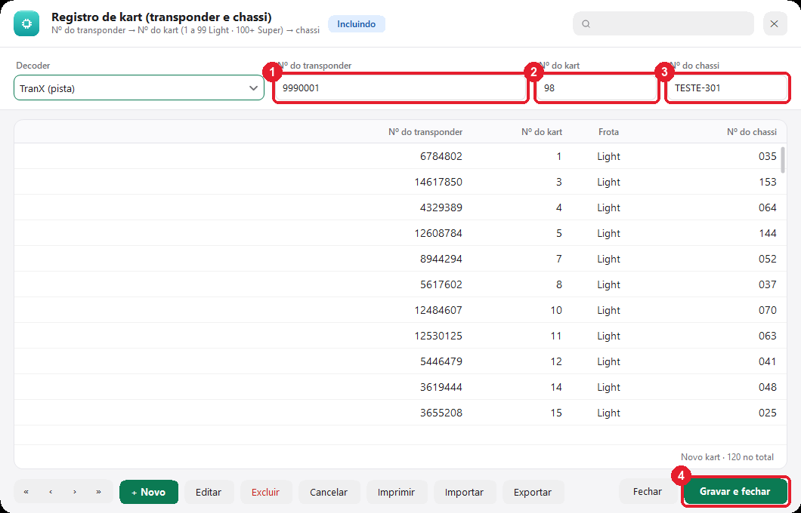
Exemplo do testeTransponder 9990001 · Kart 98 · Chassi TESTE-301
Onde clicar4 · Gravar e fechar (botão verde, canto de baixo à direita).
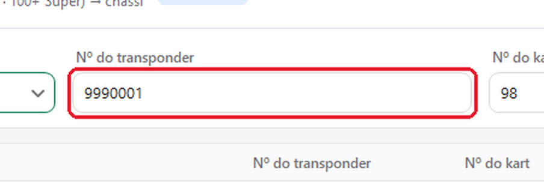
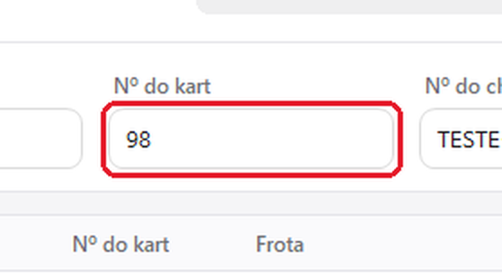
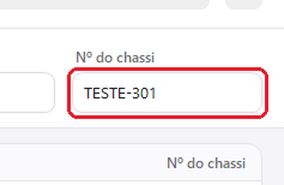
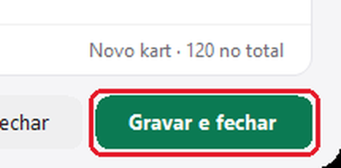
Digite o número do kart sem zero na frente e sem letras: 7, e não “07” nem “K7”. Se digitar “07”, o programa grava como 7.
7Conferir: o kart aparece na lista com a frota e o chassi
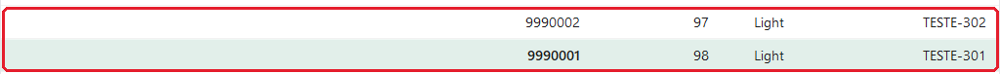
Abra de novo Cadastros › Kart: transponder e chassi e role a lista até o número do kart. A coluna Frota é preenchida sozinha pelo número do kart (98 = Light).
B. Conferir na pista
8Dar uma volta com o kart e olhar o Registro de passagens
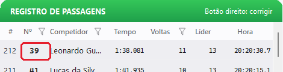
Onde olharQuadro verde REGISTRO DE PASSAGENS, à esquerda na tela principal.
CertoA passagem aparece com o número do kart na coluna Nº.
Se aparecer um aviso vermelho de transponder sem kart no rodapé, ou o kart não contar volta, veja as partes E e G.
C. Trocar placa e sensor de chassi
Use quando o kart quebra e a placa com o número e o sensor (transponder) vão para outro chassi, ou quando há troca de karts no endurance. O número do kart e o transponder continuam os mesmos; só muda o chassi.
1Selecionar o kart na lista e clicar em Editar
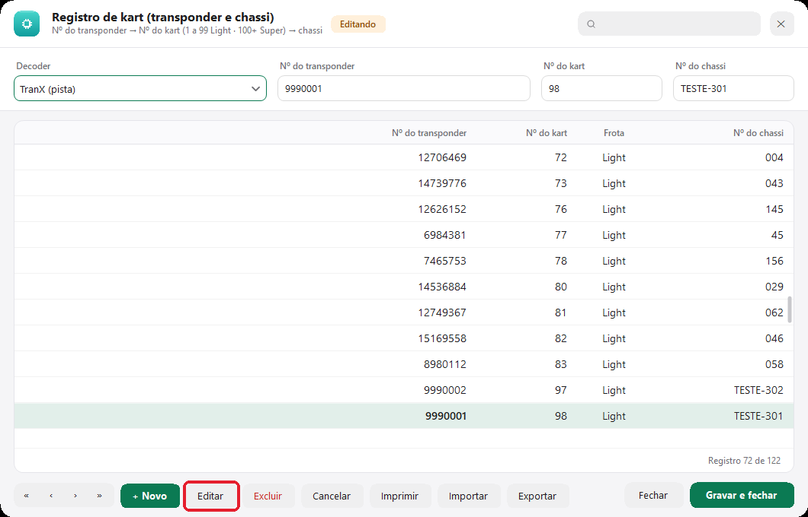
Como achar o kartRole a lista ou digite o número na busca do canto de cima à direita.
Onde clicarClique na linha do kart e depois em Editar.
2Digitar o chassi novo e clicar em Gravar e fechar
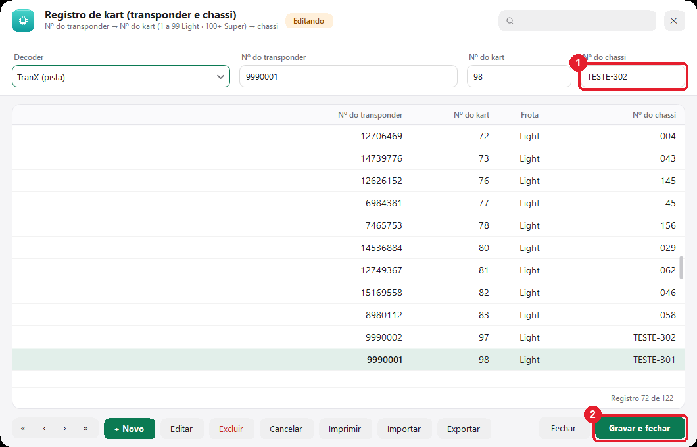
No exemploA placa 98 foi para o chassi TESTE-302, que estava no kart 97.
O que o programa fazAvisa: “O chassi TESTE-302 estava no kart 97 e agora está no kart 98. O kart 97 ficou sem chassi.”
3Resultado: o chassi saiu do kart antigo
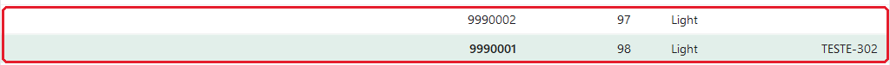
Um chassi só fica em um kart. O kart que perdeu o chassi fica com o campo em branco: quando ele ganhar outro chassi, edite e preencha.
D. Trocar o número ou desligar um transponder
1Trocar o número do kart de um transponder
Selecione a linha, clique em Editar, troque o Nº do kart e clique em Gravar e fechar. Cada kart tem um transponder só: se o número já tinha outro transponder, esse outro é desligado sozinho.
2Desligar um transponder (sensor que saiu da frota)
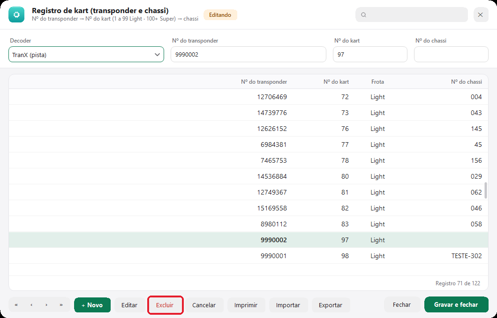
Onde clicarSelecione a linha e clique em Excluir (texto vermelho, embaixo).
O que aconteceO transponder deixa de contar volta para aquele kart. O chassi do kart continua guardado.
E. Transponder que passou sem cadastro
1Aviso de transponder sem kart
Quando um transponder sem cadastro passa pela linha de chegada, aparece um aviso no rodapé da tela principal. Clique no aviso: abre a mesma janela Registro de kart, com o transponder lido já no topo da lista e o número do kart em branco.
Clique na linha, depois em Editar, digite o Nº do kart e o Nº do chassi e clique em Gravar e fechar. Assim você nem precisa ler a etiqueta do transponder.
F. Depois do cadastro (app do galpão)
1O kart aparece no app na hora
O cadastro feito no programa da cronometragem é o mesmo do app do tablet. Em Frota, o kart novo aparece com o chassi (CH …). Se não aparecer, arraste a tela para baixo para atualizar.
2Kart que estava na oficina
No app, em Frota › OFICINA, toque no kart e em Concluir oficina · enviar à abertura.
3Liberar para o sorteio (todo dia)
No app, em Frota › Abertura do dia: faça o checklist do kart, toque em Enviar checklist do kart X e o responsável toca em Aceitar e liberar kart X. O kart fica LIVRE (verde) e entra no sorteio da frota dele.
Kart novo, ou que mexeu em motor ou carburação, deve passar pela Equalização antes de rodar com cliente.
G. Problemas comuns
| O que acontece | O que fazer |
|---|
| Aviso “Número do kart inválido” | Use só números de 1 a 999. |
| Kart passa e não aparece com número | Transponder sem cadastro: parte E. |
| Kart não conta volta nenhuma | Transponder descarregado ou mal preso. Carregue, prenda e dê outra volta. |
| Kart no Light mas deveria ser Super | A frota vem só do número do kart: 1 a 99 = Light, 100 ou mais = Super. Confira o número da placa. |
| Chassi aparece em dois karts | Não acontece: ao gravar o chassi num kart, ele sai do outro automaticamente (parte C). |
| Kart não aparece no app do galpão | Confira se ele está nesta lista. No app, arraste a tela para baixo. |
| “Nenhum kart Light/Super livre” no sorteio | Faça a abertura do dia no app (parte F). |
| Programa sem o campo “Nº do chassi” | Feche e abra o programa para ele se atualizar (versão 1.0.114 ou mais nova, aparece no rodapé). |
Teste de 17/11/2026 no programa instalado: cadastro, chassi, troca de chassi, kart inválido (0), zero à esquerda (097 → 97) e exclusão conferidos. Os karts de teste foram apagados.